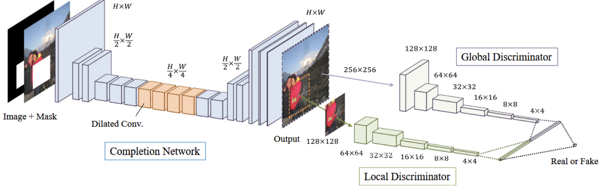

A Survey on Image Inpainting Techniques: from Context Encoder to Deepfill_v2
A Survey on Image Inpainting Techniques: from Context Encoder to Deepfill_v2
What is image inpainting?
Inpainting is a process of reconstructing lost or damaged parts of images. It is an intersection field. among image understanding, image generation, and image editing. Very common uses nowadays of inpainting are old picture or film restoration and object removal for example test, watermark, red eye, etc. It could also be observed in applications like image compression and super-resolution.
Traditional Methods
In the very beginning, people complete images with holes and missing parts using traditional methods based on optimization or greedy algorithm. Most of the traditional inpainting approaches can be divided into two different categories: diffusion-based approach and exemplar-based approach.
Diffusion-based Approaches
Diffusion-based approach propagates the known information to the missing area starting from their boundary. The data propagation process follows the partial differential equation. Diffusion-based approaches are still applied in the python package Scikit-Image.
Patch-based Approaches
Patch-based approaches fill missing parts by exchanging information between image patches. It forces unknown values in one patch to be similar to known ones in the other. The picture shows a classic patch-based inpainting approach.
Its inpainting process can be divided into 3 steps: We first calculate weights on the contour of the missing area and select the contour point with the largest weight as the interested point. In the top left image, the intersection point of the missing area contour and yellow-blue separating line is the interested point with largest weight. Then we take a patch with a certain size around the selected point P. In the third step, we calculate and find the nearest neighbor patch: Then we copy the part of the nearest neighbor patch then repeat the above steps until all points (patches) are filled. Now, We can also find this kind of inpainting approach in OpenCV, Paint3d, and Photoshop. As we can imagine the search algorithm may be time-consuming and these approaches often fail in situations like semantic filling, complex scenes, and large missing holes.
Deep Generative Models
From 2000 to 2016, there are around 30 main traditional inpainting algorithms accpected by CVPR, TIP, etc. When deep learning involved, things were changed. We can find 13 deep learning based inpainting papers were accepted by only ICCV in 2019.
From Context Encoder to Deepfill_v2
If you want to work on an image in-painting program, I’m sure you have heard about deepfill_v2. At least, you must have played around on their program website.
Deepfill_v2 is published by JiahuiYu in ICCV 2019. As the author said, she was inspired by many classical deep generative inpainting models. Therefore, to understand the background and algorithms involved in the paper and code, the algorithm structure I summarized below may give you some hints. From there you can see how amazingly the scientists and researchers explore the magic image in-painting world by standing on the shoulders of giants.
Now let’s start from the bottom:)
Context Encoder
Context Encoder is the first Generative Adversarial Networks (GANs) based inpainting algorithm. It has been regarded as a baseline of inpainting algorithms for quite a long time. The core idea of Context Encoder is channel-wise fully connected structure. Different from standard fully connected layer, in channel wise fully connected structure, each feature map is only fully connected to itself, not connected to other feature map.
Dilated Convolution
Since then, more and more GAN-based inpainting algorithms have been published. One milestone work is globally and locally consistent image completion.
One highlight of this work is employing fully convolutional network with dilated convolution instead of fully connected layer between encoder and decoder.
Why dilated Convolution?
The largest benefit of employing dilated convolution is that it could increase receptive field. Let’s look at here, Locations p1 and p2 are inside the missing region where p1 is close to the boundary and p2 is roughly at the center point. If the receptive field is small, then the influencing region at location p1 can cover the valid region, which can help fill in the pixel at location p1. But the influencing region at location p2 cannot cover the valid region, hence no information from valid region can be used for generation. That’s why we need a larger respective field in inpainting work.
In short, dilated convolution increases the receptive field without adding additional parameters by skipping consecutive spatial locations.
Globally and Locally Consistent Image Completion
As a milestone work in image in-painting arear, the main motivation of Globally and Locally Consistent Image Completion is to figure out how to apply local and global consistency in inpainting work. The structure with two discriminators is the answer. One discriminator looks at the whole image in a global sense while another one looks at the sub-image around the filled region in a local sense.

Contextual Attention Mechanism (Deepfill_v1)
Core ideas: Contextual Attention Mechanism learns where to borrow or copy contextual information from known background patches.
Input of contextual layer is feature maps with several channels, let’s say 64 channels. In this feature maps, we can find generated features in the missing region colored in blue, and features in the known region colored in orange. Let’s extract the blue one first, let’s say the shape of this tensor is 64×64×64. Then we divided the orange part into 128 small feature patches with size 64×3×3. Then, we regard these small features patches as kernel and perform convolution using each of these patches and the blue generated features inside the missing region to get a new feature tensor with size of 128×64×64.
This new tensor has 128 channels. Each channel represents a similarity between one feature patch in known regions and all generated features from missing regions. When we look along the channel dimension, the 128 elements represent the similarities between all the known patches and one particular location inside the missing region. So for each pixel/ feature element in the missing region, we can find the most contextually similar feature patches according to the attention score after softmax normalization. Then we know where to borrow information for each missing pixel. Now let’s back to the structure, The attention map color coding is used to visualize the attention map. For example, the middle white color means the pixel focuses on itself, pink means the pixel focuses on the bottom-left region, green on the top-right region, etc. You can see that this example has a pink-filled attention map. This means that the filled region mostly borrows information from the bottom-left region.

Partial Convolution & Gated Convolution
Mask in partial convolution is only defined by the mask from the previous layer. While in gated convolution, the mask is updated by both, by mask and feature from the previous step. In this case, a standard convolutional layer followed by a sigmoid activation function is applied here. With the help of the sigmoid activation function, all the values would fall into [0, 1] which can also indicate the validness of each local area. The output is the element-wise multiplication of the outputs of two standard convolutional layers, one is learning image features, another one is learning to update the mask.
Deepfill_v2
We can find gated convolution, dilated gated convolution, and contextual attention layers in its structure. It includes two generators, one for coarse inpainting, one for refining inpainting, and one discriminator. Spectral Normalization is applied to the discriminator to stabilize the training process.